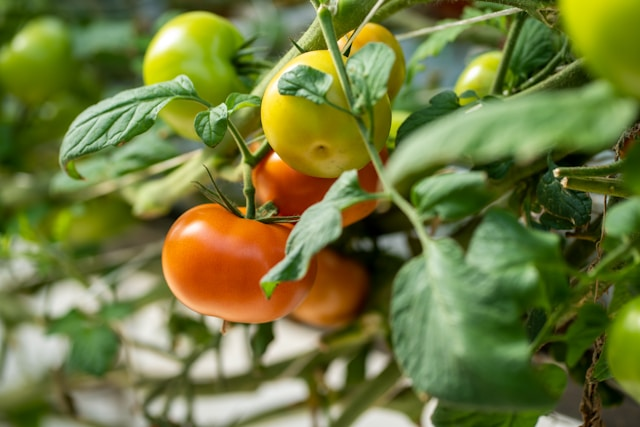

Cara Praktis Menyemai Tomat dari Benih hingga Panen
Panduan singkat menyemai tomat untuk pemula. Mulai dari benih, perawatan, hingga panen dengan hasil maksimal!
- Pemilihan Benih:
- Gunakan benih berkualitas dari tomat sehat atau kemasan terpercaya.
- Pilih jenis sesuai kebutuhan (tomat ceri, gondol, atau beef).
- Alat & Bahan:
- Benih tomat
- Media semai(tanah + kompos + sekam bakar, perbandingan 2:1:1)
- Wadah semai (tray, gelas plastik)
- Sprayer dan plastik transparan
- Langkah-langkah
- Siapkan media semai: Campur tanah, kompos, dan sekam, lalu basahi.
- Semai benih: Taruh 1-2 biji per lubang (kedalaman 0,5 cm), tutup tipis tanah.
- Jaga kelembapan: Semprot air halus dan tutup dengan plastik hingga benih berkecambah (3-7 hari).
- Pindahkan ke sinar matahari setelah kecambah muncul.
- Pemindahan ke Lahan
- Pindahkan bibit saat tinggi 10-15 cm (usia ~3-4 minggu).
- Beri jarak tanam 50-60 cm, tambahkan pupuk kandang di lubang tanam.
- Perawatan
- Penyiraman: Rutin pagi/sore, hindari membasahi daun.
- Pemupukan:
- Awal tanam: NPK 16-16-16 (fase pertumbuhan).
- Saat berbunga: NPK 8-24-24 (fase berbuah).
- Pengajiran: Pasang ajir untuk menopang tanaman.
- Pengendalian hama: Gunakan pestisida alami (bawang putih) jika diperlukan.
- Panen
- Tomat siap panen dalam 60-90 hari, tergantung varietas.
- Ciri: Warna merah merata, tekstur sedikit lunak.
- Petik dengan gunting kebun untuk hindari kerusakan.
Kesimpulan
Kesimpulan Dengan memilih benih unggul, menyemai dengan media yang tepat, dan melakukan perawatan rutin, tanaman tomat Anda akan tumbuh subur dan berbuah lebat. Kunci keberhasilan terletak pada konsistensi dalam penyiraman, pemupukan, dan perlindungan dari hama. Selamat mencoba dan semoga panen melimpah!